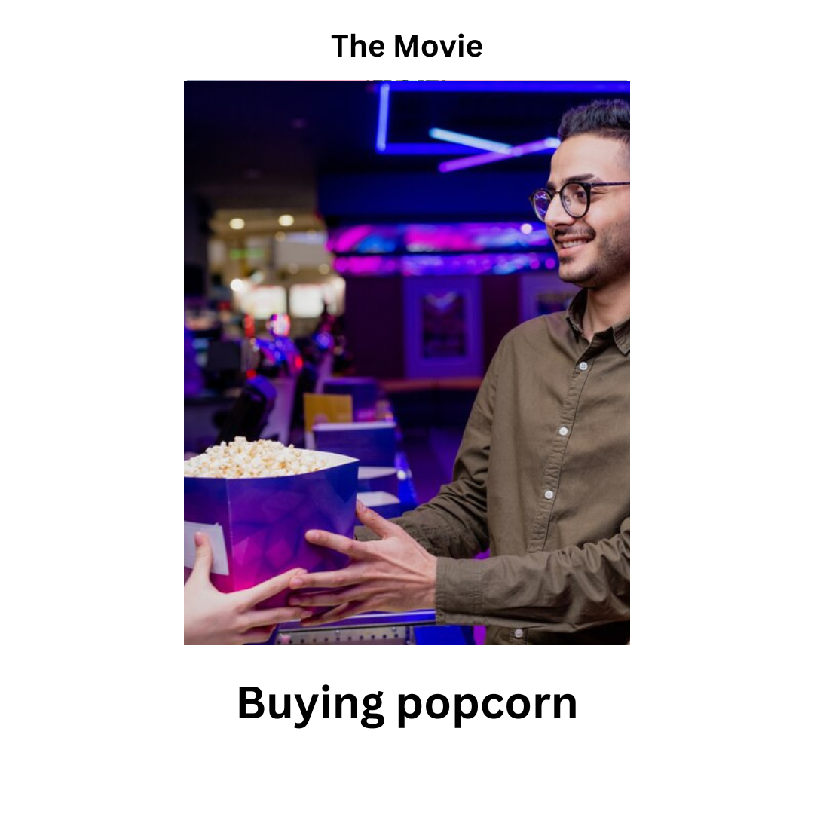

<!DOCTYPE html>
<html>
  <head>
    <style>
      /* Lock the image size for consistency */
      .exp-image {
          width: 500px;
          height: 400px; /* Fixed height to prevent layout jumps */
          object-fit: contain; /* Keeps aspect ratio without distortion */
          border: 2px solid #ccc;
          display: block;
          margin: 0 auto;
      }

      /* Container to keep everything centered and uniform */
      .stimulus-container {
          width: 600px;
          margin: 0 auto;
          text-align: center;
      }

      /* Fixed height for the question area so buttons don't move */
      .question-area {
          height: 100px;
          display: flex;
          align-items: center;
          justify-content: center;
      }

      .hide_cursor {
        cursor: none;
      }
    </style>
    <title>My experiment</title>
    <script src="jspsych/plugins/jspsych.js"></script>
    <script src="jspsych/plugins/plugin-instructions.js"></script>
    <script src="jspsych/plugins/plugin-html-button-response.js"></script>
    <script src="jspsych/plugins/plugin-survey-text.js"></script>
    <script src="jspsych/plugins/plugin-html-keyboard-response.js"></script>
    <script src="jspsych/plugins/plugin-survey-likert.js"></script>
    <script src="jspsych/plugins/plugin-fullscreen.js"></script>
    <script src="jspsych/plugins/plugin-preload.js"></script>
    <link rel="stylesheet" href="jspsych/css/jspsych.css">
  </head>
  <body></body>
  <script>
    var data_folder = 'data/';

    function saveData(name, data){
      var xhr = new XMLHttpRequest();
      xhr.open('POST', 'write_data.php');
      xhr.setRequestHeader('Content-Type', 'application/json');
      xhr.send(JSON.stringify({filedata: data}));
    }

    var jsPsych = initJsPsych({
      on_finish: function() {
        saveData(data_folder+'All_data/all_data_sub_'+subject_id+".csv", jsPsych.data.get().csv());
      }
    });

    var timeline = [];

    // ----------- SUBJECT PROPERTIES -----------
    var subject_id = jsPsych.data.getURLVariable('participantId');
    var study_id = jsPsych.data.getURLVariable('assignmentId');
    var session_id = jsPsych.data.getURLVariable('projectId');

    jsPsych.data.addProperties({
      subject_id: subject_id,
      study_id: study_id,
      session_id: session_id,
    });

    // ----------- PRELOAD SECTION -----------
    
    // Instruction images
    var instruction_images = [];
    for (var i = 0; i <= 4; i++) {
        instruction_images.push(`images/instructions/movie_${i}.png`);
    }

    // Causal folders from your VS Code
    var causal_folders = [
        //'coin_causal',
        'dog_causal',
        //'museum_causal',
        //'package_causal',
        //'saving_a_cat_causal',
        //'the_performance_causal'
    ];

    var causal_images = [];
    causal_folders.forEach(function(folder) {
        for (var i = 0; i <= 9; i++) {
            causal_images.push(`images/causal_sequence/${folder}/${folder}_${i}.png`);
        }
    });

    // Semantic folders
    var semantic_folders = [
        'cat_care_semantic',
        'creative_activities_semantic',
        'exploring_nature_semantic',
        'housework_semantic',
        'kitchen_operations_semantic'
    ];

    var semantic_images = [];
    semantic_folders.forEach(function(folder) {
        ['b', 'c', 'd'].forEach(function(letter) {
            semantic_images.push(`images/semantic_sequence/${folder}/${folder}_${letter}.png`);
        });
    });

    var preload = {
        type: jsPsychPreload,
        images: [
            'consent_form_2022.png',
            'images/other/blank.png',
            ...instruction_images,
            ...causal_images,
            ...semantic_images
        ],
        message: 'Loading experiment assets... Please wait.',
        continue_after_error: true
    };
    timeline.push(preload);

    // ----------- INTRO / CONSENT -----------
    var trial_0 = {
      type: jsPsychInstructions,
      pages: [
        '<div style="font-family: Arial; padding: 100px; padding-top: 5%; text-align: left;">' +
        '<h2>Thank you for participating in this experiment!</h2>' +
        '<p>By clicking the "Begin Study" button, you will be taken to the study, including complete instructions and an informed consent agreement.</p>'
      ],
      show_clickable_nav: true
    };

    var trial_consent = {
      type: jsPsychInstructions,
      pages: [
        '<div style="text-align:center; font-family:Arial; font-size: 22px; padding-top:20px;">' +
        '<p>Please carefully read the consent form below before proceeding.</p>' +
        '</img>' +
        '</div>'
      ],
      show_clickable_nav: true
    };

    var trial_01 = {
      type: jsPsychFullscreen,
      fullscreen_mode: true
    };

    timeline.push(trial_0, trial_consent, trial_01);

    // ----------- OVERVIEW INSTRUCTIONS -----------
    var instructions_overview = {
        type: jsPsychInstructions,
        pages: [
            '<div style="font-family: Arial; text-align: left; padding: 50px; line-height: 1.6;">' +
            '<h2>Experiment Overview</h2>' +
            '<p>This experiment consists of <b>three parts</b>:</p>' +
            '<div style="background-color: #f9f9f9; border-left: 5px solid #333; padding: 20px; margin: 20px 0;">' +
            '<p><b>Part 1:</b> You will view a series of images depicting different events.</p>' +
            '<p><b>Part 2:</b> You will be shown specific images that are <b>worth money</b>.</p>' +
            '<p><b>Part 3:</b> You will choose between two images and estimate which one is more valuable. ' +
            'A correct guess will lead to a <b>monetary reward</b>.</p>' +
            '</div>' +
            '<p>Please pay close attention to the images and follow your intuition. Click "Next" to begin.</p>' +
            '</div>'
        ],
        show_clickable_nav: true
    };
    timeline.push(instructions_overview);

    // ----------- PART 1 EXAMPLE SEQUENCE -----------
    var part1_example_intro = {
        type: jsPsychInstructions,
        pages: [
            '<div style="font-family: Arial; text-align: center; padding: 50px;">' +
            '<h2>Part 1 Example</h2>' +
            '<p style="font-size: 20px;">You will now see a sequence of images as an example.</p>' +
            '<p style="font-size: 20px;">First, you will view the image, and then a question will appear below it.</p>' +
            '<p style="color: #d9534f;"><b>Your Task:</b> Answer if there is a person in the image using the buttons provided.</p>' +
            '<p>Click "Next" to start the example.</p>' +
            '</div>'
        ],
        show_clickable_nav: true
    };
    timeline.push(part1_example_intro);

    for (var i = 1; i <= 4; i++) {
        var example_view = {
            type: jsPsychHtmlKeyboardResponse,
            stimulus: `
                <div class="stimulus-container">
                    
                    <div class="question-area"></div> 
                </div>`,
            choices: "NO_KEYS", 
            trial_duration: 4000 
        };

        var example_question = {
            type: jsPsychHtmlButtonResponse,
            stimulus: `
                <div class="stimulus-container">
                    
                    <div class="question-area">
                        <p style="font-size: 20px; font-weight: bold; margin: 0;">Was there a person in this image?</p>
                    </div>
                </div>`,
            choices: ['Yes', 'No'],
            trial_duration: 3000, 
            response_ends_trial: true,
            data: { task: 'example_question', image_index: i }
        };
        timeline.push(example_view, example_question);
    }

    timeline.push({
        type: jsPsychInstructions,
        pages: ['<div style="text-align: center; padding: 50px;"><h3>Example Completed</h3><p>Click Next to start the actual experiment.</p></div>'],
        show_clickable_nav: true
    });

    // ----------- PART 1 MAIN EXPERIMENT -----------
    var randomized_folders = jsPsych.randomization.shuffle(causal_folders);

    randomized_folders.forEach(function(folderName) {
        // Inter-block Gray Screen
        timeline.push({
            type: jsPsychHtmlKeyboardResponse,
            stimulus: '<div style="background-color: gray; width: 100vw; height: 100vh;"></div>',
            choices: "NO_KEYS",
            trial_duration: 1000
        });

        // Loop through images 1 to 9 (skipping _0)
        for (var i = 1; i <= 9; i++) {
            var main_view = {
                type: jsPsychHtmlKeyboardResponse,
                stimulus: `
                    <div class="stimulus-container">
                        
                        <div class="question-area"></div> 
                    </div>`,
                choices: "NO_KEYS",
                trial_duration: 5000 // 5 seconds image view
            };

            var main_question = {
                type: jsPsychHtmlButtonResponse,
                stimulus: `
                    <div class="stimulus-container">
                        
                        <div class="question-area">
                            <p style="font-size: 20px; font-weight: bold; margin: 0;">Is there a person in this image?</p>
                        </div>
                    </div>`,
                choices: ['Yes', 'No'],
                trial_duration: 3000, // 3 seconds question
                response_ends_trial: true,
                data: {
                    task: 'main_causal_task',
                    folder: folderName,
                    image_index: i
                }
            };
            timeline.push(main_view, main_question);
        }
    });

        // ----------- END SURVEY & COMPLETION -----------
    var part1_end = {
        type: jsPsychInstructions,
        pages: ['<div style="text-align: center; padding: 50px;"><h2>Part 1 Completed</h2><p>You have finished the first part of the experiment.</p></div>'],
        show_clickable_nav: true
    };
    timeline.push(part1_end);

    // ----------- PART 2: CAUSAL SERIES WITH RANDOM VALUE INJECTION -----------

// ----------- PART 2: VALUE LEARNING (ONLY VALUABLE IMAGES) -----------

// 1. Part 2 Introduction
var part2_intro = {
    type: jsPsychInstructions,
    pages: [
        '<div style="font-family: Arial; text-align: center; padding: 50px;">' +
        '<h2>Part 2: Value Learning</h2>' +
        '<p style="font-size: 20px;">In this part, you will be shown specific images that are <b>worth $1</b>.</p>' +
        '<p style="font-size: 20px;">Study these images carefully.</p>' +
        '<p>After each image, you must still answer if there was a person in the image.</p>' +
        '<p>Click "Next" to see an example.</p>' +
        '</div>'
    ],
    show_clickable_nav: true
};
timeline.push(part2_intro);

// 2. Part 2 EXAMPLE (Using movie_2.png)
var part2_example_view = {
    type: jsPsychHtmlKeyboardResponse,
    stimulus: `
        <div class="stimulus-container" style="display: flex; align-items: center; justify-content: center; gap: 30px;">
            
            <div style="font-size: 40px; font-weight: bold; color: green; border: 5px solid green; padding: 25px; border-radius: 15px; background-color: #f0fff0;">
                WORTH<br>$1
            </div>
        </div>
        <div class="question-area"></div>`,
    choices: "NO_KEYS",
    trial_duration: 10000 // 10 seconds
};

var part2_example_question = {
    type: jsPsychHtmlButtonResponse,
    stimulus: `
        <div class="stimulus-container" style="display: flex; align-items: center; justify-content: center; gap: 30px;">
            
            <div style="font-size: 40px; font-weight: bold; color: green; border: 5px solid green; padding: 25px; border-radius: 15px; background-color: #f0fff0;">
                WORTH<br>$1
            </div>
        </div>
        <div class="question-area">
            <p style="font-size: 20px; font-weight: bold; margin: 0;">Was there a person in this image?</p>
        </div>`,
    choices: ['Yes', 'No'],
    trial_duration: 3000,
    response_ends_trial: true
};
timeline.push(part2_example_view, part2_example_question);

// 3. Start Actual Part 2
var part2_real_start = {
    type: jsPsychInstructions,
    pages: [
        '<div style="text-align: center; padding: 50px;">' +
        '<h3>Example Finished</h3>' +
        '<p>Now the actual Value Learning part will begin.</p>' +
        '<p>You will see one valuable image from each of the series you saw earlier.</p>' +
        '</div>'
    ],
    show_clickable_nav: true
};
timeline.push(part2_real_start);

// 4. Actual Part 2 Logic (Showing only the 1 valuable image per series)
var randomized_folders_part2 = jsPsych.randomization.shuffle(causal_folders);

randomized_folders_part2.forEach(function(folderName) {
    
    // Pick the valuable image index (4, 5, or 6)
    var value_indices = [4, 5, 6];
    var random_valuable_index = jsPsych.randomization.sampleWithReplacement(value_indices, 1)[0];

    // Phase A: Display ONLY the valuable image for 10 seconds
    var main_view_part2 = {
        type: jsPsychHtmlKeyboardResponse,
        stimulus: `
            <div class="stimulus-container" style="display: flex; align-items: center; justify-content: center; gap: 30px;">
                
                <div style="font-size: 40px; font-weight: bold; color: green; border: 5px solid green; padding: 25px; border-radius: 15px; background-color: #f0fff0;">
                    WORTH<br>$1
                </div>
            </div>
            <div class="question-area"></div>`,
        choices: "NO_KEYS",
        trial_duration: 10000 // 10 seconds for learning
    };

    // Phase B: Question (3 seconds)
    var main_question_part2 = {
        type: jsPsychHtmlButtonResponse,
        stimulus: `
            <div class="stimulus-container" style="display: flex; align-items: center; justify-content: center; gap: 30px;">
                
                <div style="font-size: 40px; font-weight: bold; color: green; border: 5px solid green; padding: 25px; border-radius: 15px; background-color: #f0fff0;">
                    WORTH<br>$1
                </div>
            </div>
            <div class="question-area">
                <p style="font-size: 20px; font-weight: bold; margin: 0;">Was there a person in this image?</p>
            </div>`,
        choices: ['Yes', 'No'],
        trial_duration: 3000,
        response_ends_trial: true,
        data: {
            task: 'part2_value_learning',
            folder: folderName,
            valuable_image_index: random_valuable_index
        }
    };

    timeline.push(main_view_part2, main_question_part2);
});

// 5. Part 2 Conclusion
var part2_end = {
    type: jsPsychInstructions,
    pages: [
        '<div style="font-family: Arial; text-align: center; padding: 50px;">' +
        '<h2>Part 2 Completed</h2>' +
        '<p>You have finished the Value Learning part.</p>' +
        '<p>Click "Next" to continue to the third and final part.</p>' +
        '</div>'
    ],
    show_clickable_nav: true
};
timeline.push(part2_end);

// ----------- PART 3: CHOICE & VALUATION TEST -----------

// 1. Part 3 Introduction
var part3_intro = {
    type: jsPsychInstructions,
    pages: [
        '<div style="font-family: Arial; text-align: center; padding: 50px;">' +
        '<h2>Part 3: Final Choice</h2>' +
        '<p style="font-size: 20px;">In this final part, you will be presented with <b>two images</b> from the same series.</p>' +
        '<p style="font-size: 20px;">Your goal is to choose the "luckier" image — the one you believe is more valuable.</p>' +
        '<p>A correct choice will result in a <b>monetary bonus</b> at the end of the study.</p>' +
        '<p>Click "Next" to see an example.</p>' +
        '</div>'
    ],
    show_clickable_nav: true
};
timeline.push(part3_intro);

// 2. PART 3 EXAMPLE (Using movie_1 and movie_3)
var part3_example_view = {
    type: jsPsychHtmlKeyboardResponse,
    stimulus: `
        <div style="font-family: Arial; margin-bottom: 20px;"><h3>Which one is luckier?</h3><p>Study the images...</p></div>
        <div class="stimulus-container" style="display: flex; width: 1100px; justify-content: center; gap: 50px;">
            
            
        </div>`,
    choices: "NO_KEYS",
    trial_duration: 10000 // 10 seconds study time
};

var part3_example_choice = {
    type: jsPsychHtmlButtonResponse,
    stimulus: `
        <div style="font-family: Arial; margin-bottom: 20px;"><h3>Which one is luckier?</h3><p>Make your choice now.</p></div>
        <div class="stimulus-container" style="display: flex; width: 1100px; justify-content: center; gap: 50px;">
            
            
        </div>`,
    choices: ['Left Image', 'Right Image'],
    data: { task: 'part3_example_choice' }
};
timeline.push(part3_example_view, part3_example_choice);

// 3. Start Actual Part 3
timeline.push({
    type: jsPsychInstructions,
    pages: ['<div style="text-align: center; padding: 50px;"><h3>Example Finished</h3><p>The final test will now begin.</p></div>'],
    show_clickable_nav: true
});

// 4. Actual Part 3 Logic (Dynamic Evaluation)
var randomized_folders_part3 = jsPsych.randomization.shuffle(causal_folders);

randomized_folders_part3.forEach(function(folderName) {
    
    // We use a trial sequence to ensure images stay in the same position for both View and Choice
    var part3_sequence = {
        timeline: [
            {
                type: jsPsychHtmlKeyboardResponse,
                stimulus: function() {
                    // Extract X from Part 2 data
                    var part2_data = jsPsych.data.get().filter({folder: folderName, task: 'part2_value_learning'}).values();
                    var X = (part2_data.length > 0) ? part2_data[0].valuable_image_index : 5;
                    
                    // Determine Left/Right once per folder
                    var is_left_smaller = (folderName.length % 2 === 0);
                    var left_idx = is_left_smaller ? X - 1 : X + 1;
                    var right_idx = is_left_smaller ? X + 1 : X - 1;

                    return `
                        <div style="font-family: Arial; margin-bottom: 20px;"><h3>Which image is luckier?</h3></div>
                        <div class="stimulus-container" style="display: flex; width: 1100px; justify-content: center; gap: 50px;">
                            
                            
                        </div>`;
                },
                choices: "NO_KEYS",
                trial_duration: 10000
            },
            {
                type: jsPsychHtmlButtonResponse,
                stimulus: function() {
                    var part2_data = jsPsych.data.get().filter({folder: folderName, task: 'part2_value_learning'}).values();
                    var X = (part2_data.length > 0) ? part2_data[0].valuable_image_index : 5;
                    
                    var is_left_smaller = (folderName.length % 2 === 0);
                    var left_idx = is_left_smaller ? X - 1 : X + 1;
                    var right_idx = is_left_smaller ? X + 1 : X - 1;

                    return `
                        <div style="font-family: Arial; margin-bottom: 20px;"><h3>Which image is luckier?</h3></div>
                        <div class="stimulus-container" style="display: flex; width: 1100px; justify-content: center; gap: 50px;">
                            
                            
                        </div>`;
                },
                choices: ['Left', 'Right'],
                data: function() {
                    var part2_data = jsPsych.data.get().filter({folder: folderName, task: 'part2_value_learning'}).values();
                    var X = (part2_data.length > 0) ? part2_data[0].valuable_image_index : 5;
                    return {
                        task: 'part3_final_choice',
                        folder: folderName,
                        valuable_X: X,
                        left_image_index: (folderName.length % 2 === 0) ? X-1 : X+1,
                        right_image_index: (folderName.length % 2 === 0) ? X+1 : X-1
                    };
                }
            }
        ]
    };
    timeline.push(part3_sequence);
});


// ----------- END חOF EXPERIMENT -----------

    var trial_demographics = {
      type: jsPsychSurveyText,
      questions: [
        {prompt: 'Please insert your gender (MALE/ FEMALE/ OTHER)'},
        {prompt: 'Please insert your age'}
      ]
    };
    timeline.push(trial_demographics);
    

    var trial_finish = {
      type: jsPsychInstructions,
      pages: [
        '<span style="color: black; font-size: 24px">You have completed the experiment.' + 
        '<br/>The completion code is : 85B28EDEFF <br/>Thank you for your participation!</span>'
      ],
      show_clickable_nav: true
    };
    timeline.push(trial_finish);

    // ----------- RUN -----------
    jsPsych.run(timeline);

  </script>
</html>